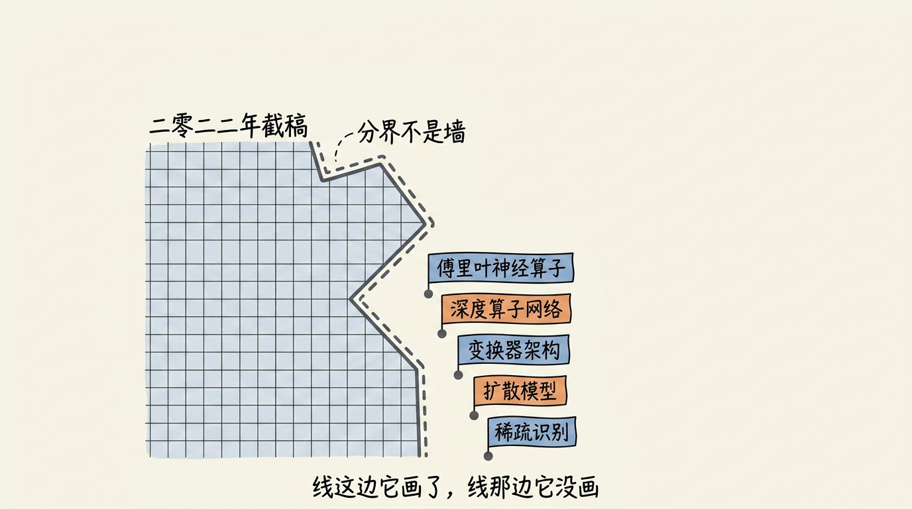
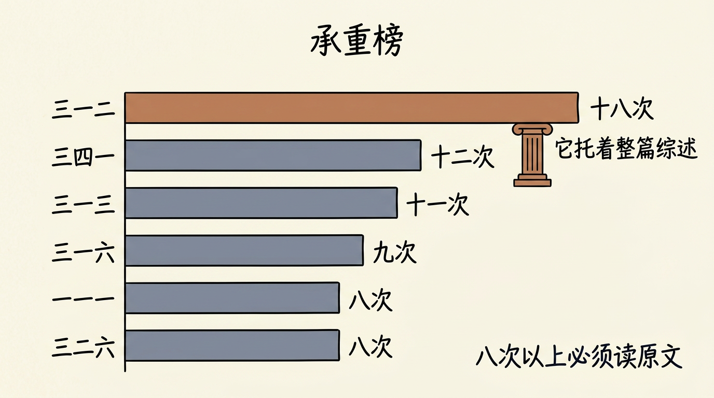
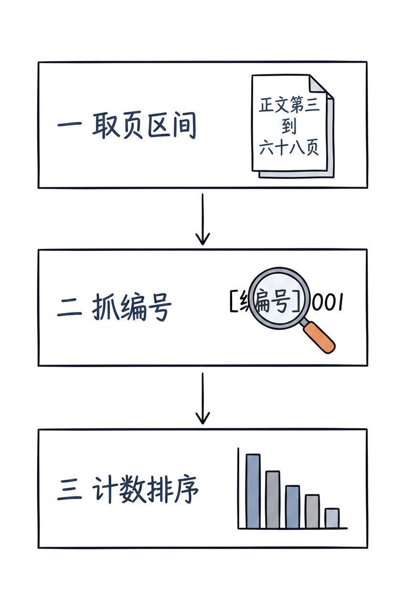
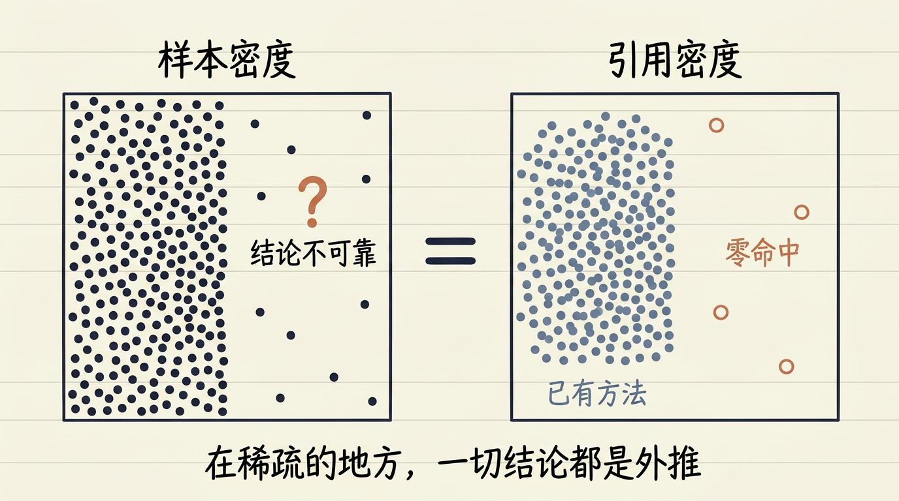
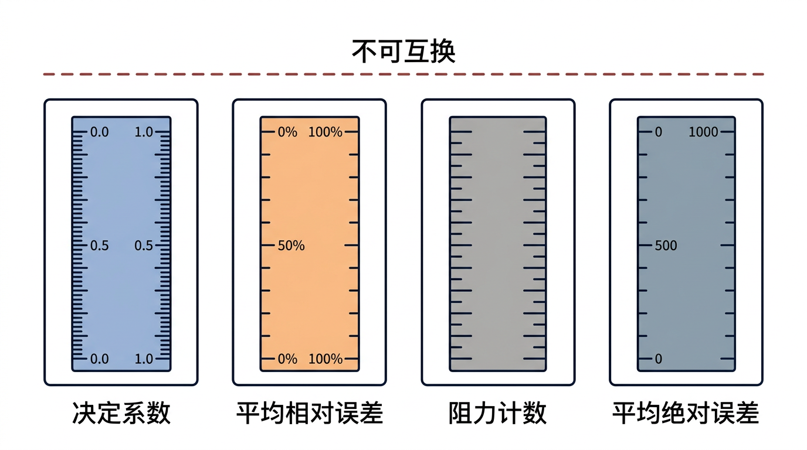
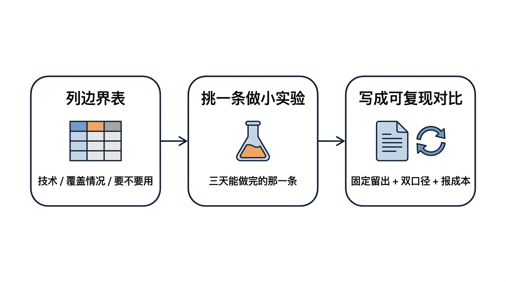
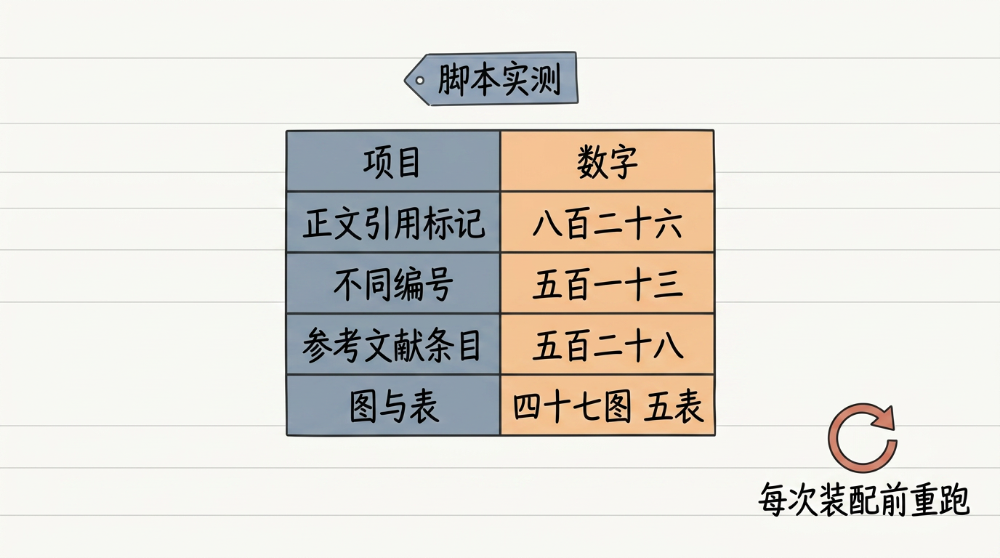
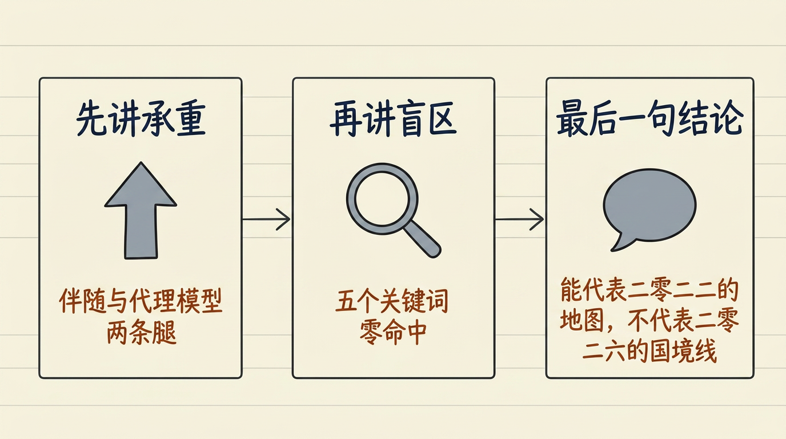
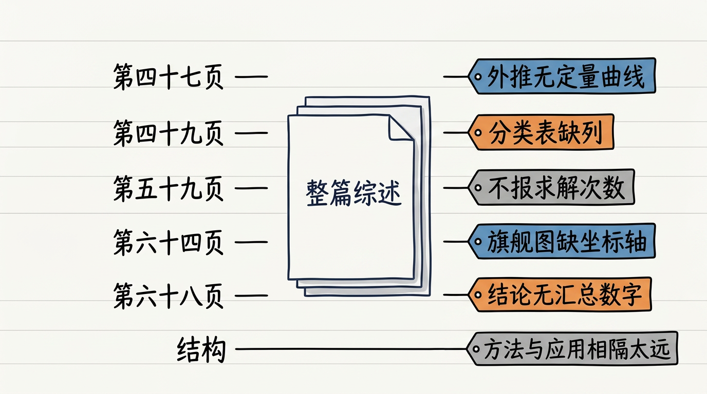
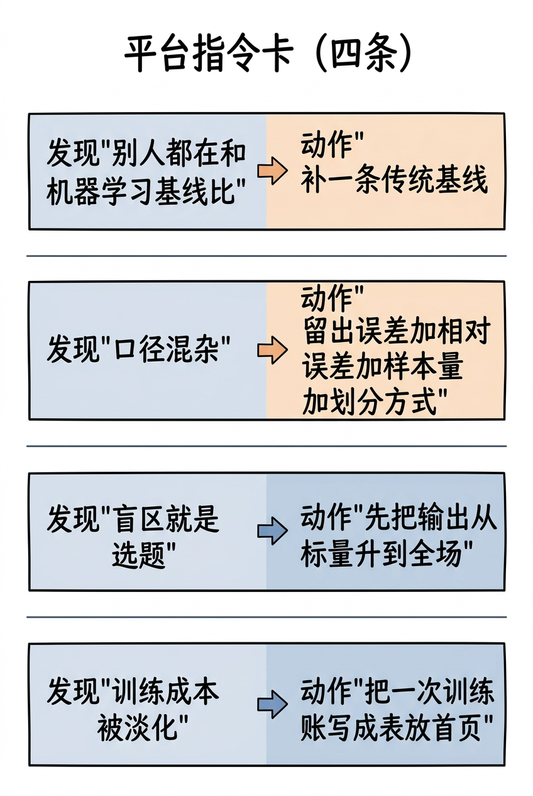

逐张看文字是否清晰不糊、中文是否有错字、结构是否与正文一致。发现问题的图，把 文件名 报给我，我单独重画。
（自检脚本无视觉能力，本页只能由人眼完成。）
| # | 图 | 位置 / 应表达的意思 |
|---|---|---|
| 1 |  | §3 引子 2022 地图 + 境外五城：线这边它画了，线那边它没画 L11v2_s1_borderline_map_zh.png |
| 2 |  | §5(a) 承重榜：[312]×18 / [341]×12 / [313]×11 / [316]×9 / [111][326]×8 L11v2_s2_load_bearing_zh.png |
| 3 |  | §5(a) 自查三步：取页区间 → 抓编号 → 计数排序 L11v2_s3_repro_steps_zh.png |
| 4 |  | §5(b) 引用密度 ≈ 样本密度：在稀疏的地方一切结论都是外推 L11v2_s3_density_analogy_zh.png |
| 5 |  | §5(c) 四种口径刻度不同，不可互换 L11v2_s3_four_calibers_zh.png |
| 6 |  | §6 操作流 列边界表 → 挑一条做小实验 → 写成可复现对比 L11v2_s4_three_products_zh.png |
| 7 |  | §7 体检表速览：826 / 513 / 528 + 47 图 5 表 L11v2_s5_scan_table_zh.png |
| 8 |  | §7 讲给组会：先承重、再盲区、最后地图与国境线 L11v2_s5_tell_group_zh.png |
| 9 |  | §8 六条批评的页码定位（p47/p49/p59-60/p64/p68/结构） L11v2_s6_six_critiques_zh.png |
| 10 |  | §10 给平台的四条指令：补基线 / 四件套 / 先升输出 / 训练账 L11v2_s8_platform_four_orders_zh.png |